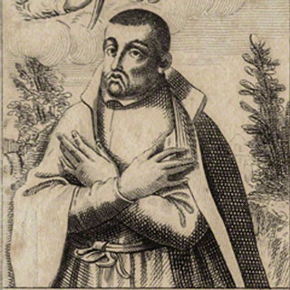
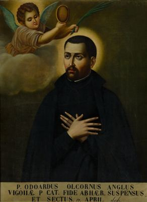

Isusovački blaženici
Svećenik
Bl. Eduard Oldcorne
1561. – 1607.
Šesnaest godina služio je engleskim katolicima iz skrovišta u Hinlip Hallu. Nakon uhićenja, mučenja i nepravedne optužbe ostao je vjeran svećeničkom pozivu.
Tekst je preveden i prilagođen uz pomoć umjetne inteligencije.

Izvor slike


Izvor slike
- Spomendan
- 7. travnja
- Zaštitništvo
- Nije navedeno u izvoru
- Životni vijek
- 1561. – 1607.
- Djelovanje
- Misije i evangelizacija · Siromašni i isključeni · Progoni i progonstvo · Mučeništvo
- Razdoblje
- 16., 17. stoljeće
- Podrijetlo
- York, Engleska
- Povratak u Englesku
- 1588.
- Rođenje — dostupni podaci
- 1561.; dan i mjesec nisu potvrđeni u provjerenom izvoru.
- Mjesto rođenja
- York, Engleska
- Datum smrti
- 07.04.1607.
- Mjesto smrti/mučeništva
- Red Hill, Worcester, Engleska
- Okolnosti smrti/mučeništva
- Obješen, zatim obezglavljen i raščetvoren nakon uhićenja u Hindlip Hallu.
- Uloga
- Svećenik
- Mučenik
- Da
- Ostale oznake
- Mučenik engleskih protukatoličkih progona
- Pripadnost
- Isusovac
- Razlike u izvorima
- Datum smrti u podatcima zbirke: 07.04.1607. Raniji biografski izvor navodi 07.04.1606. Razlika izvora nije razriješena.
- Drugi oblici imena
- Edvard Oldcorne · Edward Oldcorne · Edward
Životopis
Edvard Oldcorne rođen je 1561. u Yorku u obitelji zidara Johna i njegove žene Mary. Otac je bio protestant, a majčina katolička vjera uključivala je iskustvo zatvora. Školovao se u školi sv. Petra, koju su pohađali i Guy Fawkes te braća Wright. Oldcorne je započeo medicinsku pripravu, ali se odlučio za svećeništvo te studirao u Reimsu i Rimu. Nakon ređenja pristupio je Družbi Isusovoj.
S Johnom Gerardom potajno je 1588. doplovio na obalu Norfolka, u ozračju napetosti nakon poraza Španjolske armade. Dugotrajna služba vezala ga je uz Worcestershire, Baddesley Clinton i osobito Hinlip Hall. Ondje je šesnaest godina propovijedao, dijelio sakramente i pomagao siromašnima. Domaćinova sestra Dorothy u početku je samo podnosila prisutnost svećenika; njegov post i ustrajnost pridonijeli su njezinu povratku katoličkoj vjeri.
Bolest grla otežavala mu je propovijedanje. Ozdravljenje je pripisivao zagovoru svete Winifrede, čije je velško svetište pohodio. Nakon otkrića Barutne urote 1605. čak su i veze s pojedinim hodočasnicima postale povod sumnji. U Hinlip su se sklonili Henry Garnet i graditelj skrovišta Nikola Owen, uz Oldcornea i njegova dugogodišnjega pomagača Ralpha Ashleyja.
Velika pretraga kuće u siječnju 1606. završila je njihovim zarobljavanjem nakon višednevnoga skrivanja bez dostatne hrane. U londonskom Toweru Oldcorne je izdržao višednevno mučenje. Dokaz povezanosti s urotom nije pronađen; naposljetku je osuđen zbog svećeništva. Prije pogubljenja oprostio je čovjeku koji ga je izdao i molio za kralja, tužitelje i suce. Pogubljen je u Worcesteru 7. travnja 1606., a Ashley je slijedio za njim. Beatificiran je 1929. Sačuvane relikvije i arhivska svjedočanstva čuvaju pamćenje njegove službe.
Život i nasljeđe
Oldcorneova dugotrajna služba u Hindlipu oslanjala se na isto kućno središte i krug domaćina. Njegova majka svojim je držanjem u zatvoru ranije utjecala na njegov odnos prema vjeri. Put prema svećeništvu uključivao je odustajanje od započetoga medicinskog školovanja. Takvi podatci povezuju kasniju brigu za vjernike s vlastitim obiteljskim i obrazovnim iskustvom. Ashley mu je pomagao kroz godine, a Owenova skrovišta bila su dio šire zaštite kuće. Njihove su veze stvarne i prethode završnome zajedničkom zatočenju.
Tekst je preveden i prilagođen uz pomoć umjetne inteligencije.
Pročitaj više na izvornoj stranici ↗